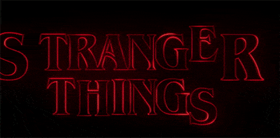
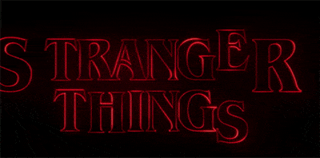
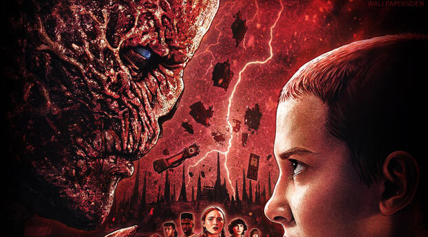
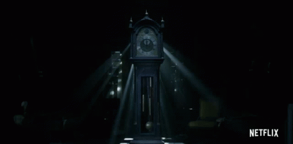

La tragedia de Hawkins y el poder de la amistad
Hablaremos un poco de como comenzo esta tragedia y como la amistad puede sacar el lado mas valiente de nosotros .
Hablaremos un poco de como comenzo esta tragedia y como la amistad puede sacar el lado mas valiente de nosotros .
comienza con la desaparición de un niño en Hawkins, Indiana, durante los años 80. Sus amigos y una niña con habilidades especiales investigan y descubren un laboratorio secreto que conecta con un mundo paralelo llamado el Upside Down, lleno de peligrosas criaturas. La serie explora la valentía de los niños, las complejidades de las relaciones y combina ciencia ficción, horror y nostalgia de los años 80 en una emocionante historia de misterio y suspenso.

los personajes principales enfrentan la amenaza del Demogorgon y otros peligros del Upside Down. A medida que la historia avanza, los lazos entre los amigos se fortalecen, mientras que nuevos personajes y desafíos se presentan. La serie explora el sacrificio, la amistad y el crecimiento personal, culminando en batallas finales que ponen a prueba su valentía y determinación para proteger a su comunidad y a ellos mismos de fuerzas oscuras y desconocidas.
los personajes principales se enfrentan a desafíos cada vez mayores mientras intentan proteger a su comunidad de amenazas sobrenaturales. La serie explora temas de amistad, valentía y crecimiento personal, culminando en momentos emocionantes y decisivos que ponen a prueba los lazos entre los personajes y su determinación para enfrentar lo desconocido y que el portal aun no ha cerrado...
